Soil Mechanics
Maximiliano Garnier-Villarreal
2026-05-19
Source:vignettes/soil_mechanics_vig.Rmd
soil_mechanics_vig.RmdThis document highlights some functions of the GMisc
package related to soil mechanics problems.
Bearing capacity
The idea here is to provide a function that solves the bearing capacity equation for different types of footings, giving as a result the ultimate () and allowable bearing capacity ():
where
is the width in meters,
is the embedment depth in meters,
is the desired factor of safety,
is the cohesion in kPa (referred as tau0 in the function),
is the unit weight in
,
and the rest of the parameters are correction factors dependent on these
input values, the internal friction angle
,
the type of footing (“strip”, “square”, “rectangular”,“circular”), and
the depth to the water level.
The function that solves the above equation is
bearing_capacity, with the mentioned arguments but
specifying the wet/moist unit weight, saturated unit weight for their
respective use. The function outputs a table for
and for
and graph for the results.
The B and D parameters can be vectors for
multiple cases comparisons or single values for a single case estimate.
If FS = 1 then the allowable and ultimate bearing
capacities are the same
().
Different scenarios can be analyzed:
- For a total stress analysis (TSA) in a cohesive soil (plastic silts
and clays) set the friction angle equal to zero (
phi = 0) and the cohesion equal to the undrained shear strength (tau0 = Su). - For an effective stress analysis (ESA) in a cohesive soil use the effective friction angle () and effective cohesion ().
- For a coarse-grained soil (gravels, sands, and non-plastic silts)
usually TSA = ESA, and the friction angle and cohesion should be used,
and if the material has no-cohesion then set cohesion equal to zero
(
tau0 = 0)
Also different methods can be used to calculate the bearing capacity factors (, , and ), such as “Vesic” (default), “Terzaghi”, “Meyerhof”, “Hansen”, “Michalowski” or “Davis & Booker”. Additionally the type of failure case can be specified and it can be either “general” or “local”.
We can define a set of parameters to use in different examples as follows:
B = seq(0.5, 2, 0.25)
D = seq(0, 2, 0.25)
L = NULL
gamma.h = 15.5
gamma.s = 18.5
tau0 = 10
phi = 30
FS = 3
wl = 1The first example uses the default “square” footing:
bearing_capacity(B, D, L, gamma.h, gamma.s, tau0, phi, wl, FS)## $qu
## # A tibble: 9 × 8
## `D/B` `0.5` `0.75` `1` `1.25` `1.5` `1.75` `2`
## <dbl> <dbl> <dbl> <dbl> <dbl> <dbl> <dbl> <dbl>
## 1 0 414. 440. 466. 480. 495. 510. 524.
## 2 0.25 595. 596. 598. 605. 615. 626 638.
## 3 0.5 807. 762. 746. 743. 745. 751. 759.
## 4 0.75 929. 947. 909. 892. 886. 885. 888.
## 5 1 1084. 1055. 1088. 1054. 1036. 1028. 1025
## 6 1.25 1185. 1158. 1138. 1179. 1150. 1134. 1126.
## 7 1.5 1281. 1256. 1237. 1222. 1271. 1246. 1231.
## 8 1.75 1375. 1352. 1333. 1318. 1307. 1362. 1340.
## 9 2 1467. 1446. 1428. 1413. 1402. 1393. 1453.
##
## $qa
## # A tibble: 9 × 8
## `D/B` `0.5` `0.75` `1` `1.25` `1.5` `1.75` `2`
## <dbl> <dbl> <dbl> <dbl> <dbl> <dbl> <dbl> <dbl>
## 1 0 138. 147. 155. 160. 165. 170. 175.
## 2 0.25 202. 203. 203. 206. 209. 213. 217.
## 3 0.5 277. 262. 256. 255. 256. 258. 261.
## 4 0.75 321. 327. 315. 309. 307. 307. 308.
## 5 1 377. 367. 378. 367. 361. 358. 357.
## 6 1.25 413. 404. 397. 411. 401. 396. 393.
## 7 1.5 447. 439. 432. 427. 443. 435. 430.
## 8 1.75 480. 473. 466. 461. 458. 476. 469.
## 9 2 513. 506. 500. 495. 491. 488. 509.
##
## $Plot
The second example uses the a “strip” footing:
bearing_capacity(
B,
D,
L,
gamma.h,
gamma.s,
tau0,
phi,
wl,
FS,
footing = "strip"
)## $qu
## # A tibble: 9 × 8
## `D/B` `0.5` `0.75` `1` `1.25` `1.5` `1.75` `2`
## <dbl> <dbl> <dbl> <dbl> <dbl> <dbl> <dbl> <dbl>
## 1 0 388. 432. 475. 499. 524. 548. 572.
## 2 0.25 515. 539. 553. 571. 592. 613. 636.
## 3 0.5 661. 640. 641. 651. 667. 684. 704.
## 4 0.75 727. 754. 738. 739. 748. 761. 777.
## 5 1 816. 809. 846. 835. 835. 843. 854.
## 6 1.25 882. 876. 875. 919. 912. 914. 921.
## 7 1.5 944. 940. 940. 943. 992. 988. 991.
## 8 1.75 1005. 1002. 1003. 1006. 1012. 1065. 1063.
## 9 2 1064. 1063. 1064. 1068. 1073. 1081. 1138.
##
## $qa
## # A tibble: 9 × 8
## `D/B` `0.5` `0.75` `1` `1.25` `1.5` `1.75` `2`
## <dbl> <dbl> <dbl> <dbl> <dbl> <dbl> <dbl> <dbl>
## 1 0 129. 144. 158. 166. 175. 183. 191.
## 2 0.25 176. 183. 188. 194. 201. 208. 216.
## 3 0.5 228. 221. 221. 225. 230. 236. 242.
## 4 0.75 254. 263. 258. 258. 261. 265. 270.
## 5 1 288. 285. 297. 294. 294. 296. 300.
## 6 1.25 312. 310. 309. 324. 322. 322. 325.
## 7 1.5 335. 333. 333. 334. 350. 349. 350.
## 8 1.75 357. 356. 356. 357. 359. 377. 376.
## 9 2 379. 379. 379. 380. 382. 384. 404.
##
## $Plot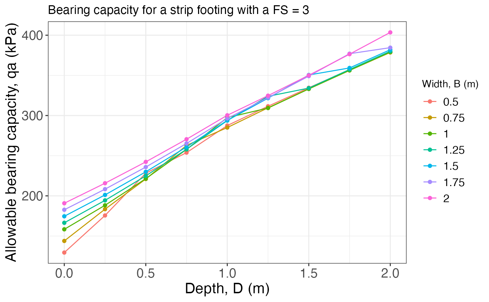
And the last example uses a “rectangular” footing, where it is needed
to define the L argument (the length of the footing in
meters):
bearing_capacity(
B,
D,
L = 3,
gamma.h,
gamma.s,
tau0,
phi,
wl,
FS,
footing = "rectangular"
)## $qu
## # A tibble: 9 × 8
## `D/B` `0.5` `0.75` `1` `1.25` `1.5` `1.75` `2`
## <dbl> <dbl> <dbl> <dbl> <dbl> <dbl> <dbl> <dbl>
## 1 0 397. 434. 472. 493. 514. 535. 556.
## 2 0.25 542. 558. 568. 583. 600. 618. 636.
## 3 0.5 710. 680. 676. 682. 693. 707. 722.
## 4 0.75 794. 818. 795. 790. 794. 802. 814.
## 5 1 906. 891. 926. 908. 902. 904. 911.
## 6 1.25 983. 970. 962. 1006. 991. 987. 989.
## 7 1.5 1056. 1046. 1039. 1036. 1085. 1074. 1071.
## 8 1.75 1128. 1119. 1113. 1110. 1110. 1164. 1155.
## 9 2 1198. 1191. 1186. 1183. 1183. 1185. 1243.
##
## $qa
## # A tibble: 9 × 8
## `D/B` `0.5` `0.75` `1` `1.25` `1.5` `1.75` `2`
## <dbl> <dbl> <dbl> <dbl> <dbl> <dbl> <dbl> <dbl>
## 1 0 132. 145. 157. 164. 171. 178. 185.
## 2 0.25 184. 190. 193. 198. 204. 210. 216
## 3 0.5 244. 235. 233. 235. 239. 243. 248.
## 4 0.75 276. 284. 277. 275 276. 279. 283.
## 5 1 317. 312. 324. 318. 316. 317. 319.
## 6 1.25 345. 341. 338. 353. 348. 347. 347.
## 7 1.5 372. 368. 366. 365. 381. 378. 377.
## 8 1.75 398. 395. 393. 392. 392. 410 407.
## 9 2 424. 421. 419. 418. 418. 419. 439.
##
## $Plot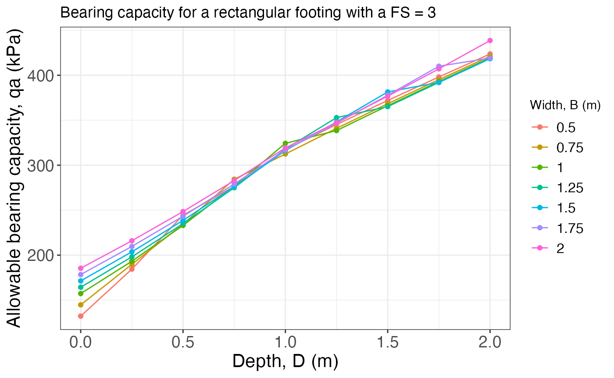
Induced stress
The function induced_stress calculates and plots the
stress distribution under the center or corner (for rectangular or
square footings) of a footing of different shapes (“strip”, “square”,
“rectangular”, or “circular”), using the solutions from Boussinesq. The
arguments of the function are qs: the stress applied by the
footing, B: the width of the footing in meters,
L: the length of the footing in meters (applies only for
rectangular footings), z.end: the depth down to which
calculate the stress, and rect.pos: the location for which
to calculate the stress (either “center” or “corner”). The function
returns a data frame with the stress values and two plots: one static
($Plot) and one interactive ($Plotly), the
last one is the one shown here.
The first example shows the plot for the default “strip” footing, and one value of width:
qs = 1
B = 1
L = NULL
z.end = 8
induced_stress(qs, B, L, z.end)$PlotlyThe second example plots the results for a “square” footing and different widths:
qs = 1
B = c(1, 2, 4)
L = NULL
z.end = 8
induced_stress(qs, B, L, z.end, footing = "square")$PlotlyThe last example plots the results for a “rectangular” footing and different lengths at both the center and the corner:
qs = 1
B = 1
L = c(1, 2, 4)
z.end = 8
induced_stress(qs, B, L, z.end, footing = "rectangular")$Plotly
induced_stress(
qs,
B,
L,
z.end,
footing = "rectangular",
rect.pos = "corner"
)$PlotlyInsitu stress
The insitu_stress function builds the vertical stress
profile with depth for a layered soil, returning the total stress, pore
pressure (when a water table depth NF is supplied), and
effective stress at every depth increment. The required arguments are
boundaries: a numeric vector of layer bottom depths (m,
strictly increasing), soils: a character vector of soil
names, and unit_weights: unit weights
()
for each layer. The optional NF argument sets the water
table depth; omitting it (or NF = NA) gives a fully dry
profile. The function returns a list with a data frame
($Profile) and a ggplot2 graph ($Graph).
Define a four-layer soil profile:
boundaries <- c(6, 12, 22, 30)
soils <- c("Sandy silt", "Fine sand", "Clay", "Gravel")
unit_weights <- c(18.9, 20.8, 19.0, 18.5)Dry profile (no water table):
res_dry <- insitu_stress(boundaries, soils, unit_weights)
res_dry$Profile## # A tibble: 61 × 6
## Depth Soil Unit_Weight Total_Stress Pore_Pressure Effective_Stress
## <dbl> <fct> <dbl> <dbl> <dbl> <dbl>
## 1 0 Sandy silt 18.9 0 NA 0
## 2 0.5 Sandy silt 18.9 9.45 NA 9.45
## 3 1 Sandy silt 18.9 18.9 NA 18.9
## 4 1.5 Sandy silt 18.9 28.4 NA 28.4
## 5 2 Sandy silt 18.9 37.8 NA 37.8
## 6 2.5 Sandy silt 18.9 47.2 NA 47.2
## 7 3 Sandy silt 18.9 56.7 NA 56.7
## 8 3.5 Sandy silt 18.9 66.2 NA 66.2
## 9 4 Sandy silt 18.9 75.6 NA 75.6
## 10 4.5 Sandy silt 18.9 85.1 NA 85.1
## # ℹ 51 more rows
res_dry$Graph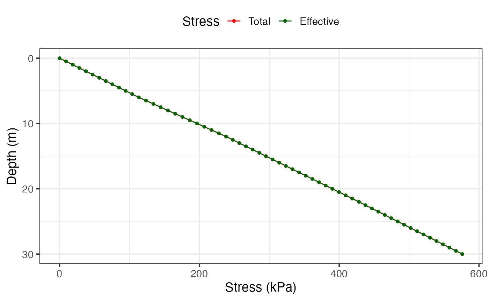
Profile with the water table at 12 m depth:
res_wt <- insitu_stress(boundaries, soils, unit_weights, NF = 12)
res_wt$Profile## # A tibble: 61 × 6
## Depth Soil Unit_Weight Total_Stress Pore_Pressure Effective_Stress
## <dbl> <fct> <dbl> <dbl> <dbl> <dbl>
## 1 0 Sandy silt 18.9 0 NA 0
## 2 0.5 Sandy silt 18.9 9.45 NA 9.45
## 3 1 Sandy silt 18.9 18.9 NA 18.9
## 4 1.5 Sandy silt 18.9 28.4 NA 28.4
## 5 2 Sandy silt 18.9 37.8 NA 37.8
## 6 2.5 Sandy silt 18.9 47.2 NA 47.2
## 7 3 Sandy silt 18.9 56.7 NA 56.7
## 8 3.5 Sandy silt 18.9 66.2 NA 66.2
## 9 4 Sandy silt 18.9 75.6 NA 75.6
## 10 4.5 Sandy silt 18.9 85.1 NA 85.1
## # ℹ 51 more rows
res_wt$Graph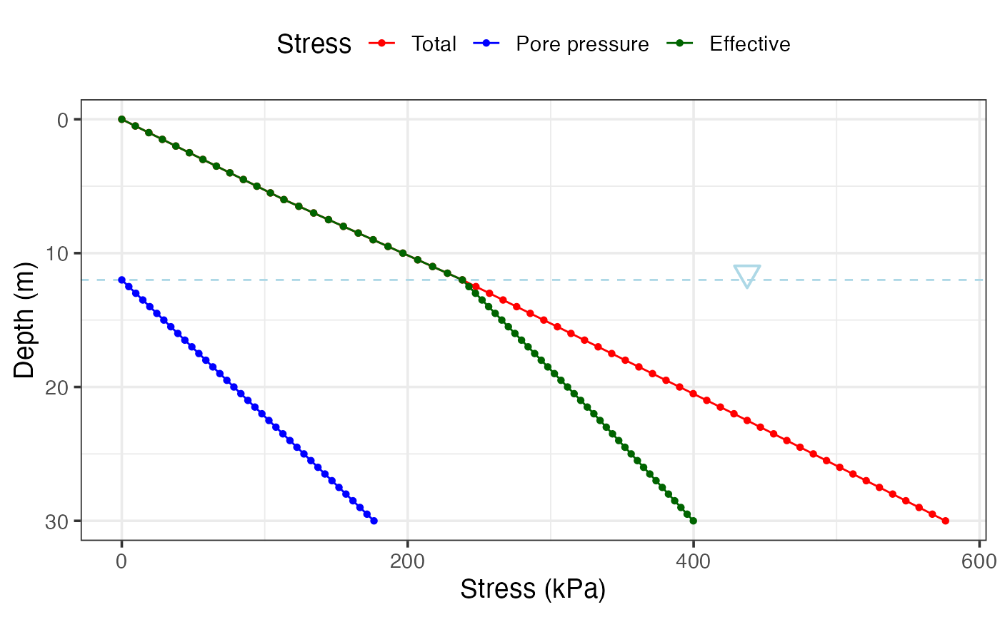
Consistency (Atterberg) limits
Casagrande cup liquid limit
Casagrande_LL fits a linear regression of water content
vs
from a Casagrande cup test and estimates the liquid limit at
blows. If pl (plastic limit) is supplied the function also
returns PI; adding w (natural water content) further
returns LI and CI.
Liquid limit only:
Casagrande_LL(N = c(15, 20, 28, 35), W = c(42, 38, 34, 31))$plot
With plastic limit and natural water content (PI, LI, CI also computed):
res_ll <- Casagrande_LL(
N = c(15, 20, 28, 35),
W = c(42, 38, 34, 31),
pl = 22,
w = 30
)
res_ll$plot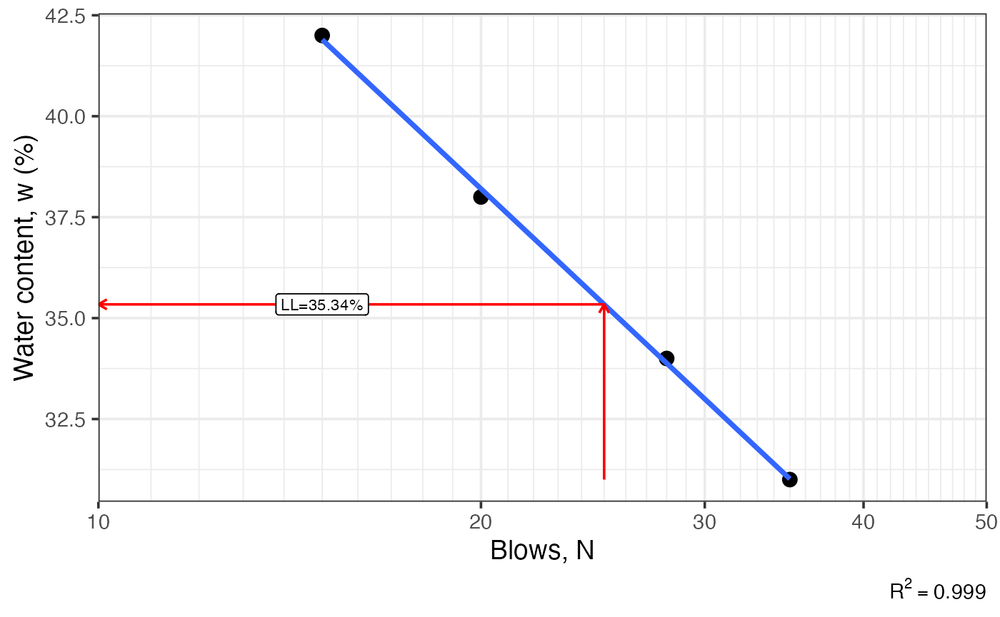
res_ll[c("ll", "pl", "pi", "li", "ci")]## $ll
## [1] 35.34
##
## $pl
## [1] 22
##
## $pi
## [1] 13.34
##
## $li
## [1] 0.6
##
## $ci
## [1] 0.4Fall cone liquid and plastic limits
fallcone_limits fits a log-log regression of
vs penetration from a fall cone test. Use limit = 'l' for
the liquid limit (80 g cone, 20 mm), 'p' for the plastic
limit (240 g cone, 20 mm), or 'b' for both (PL estimated at
2 mm; PI also returned).
Liquid limit only:
fallcone_limits(
P = c(5.5, 7.8, 14.8, 22, 32),
W = c(39.0, 44.8, 52.5, 60.3, 67.0)
)$plot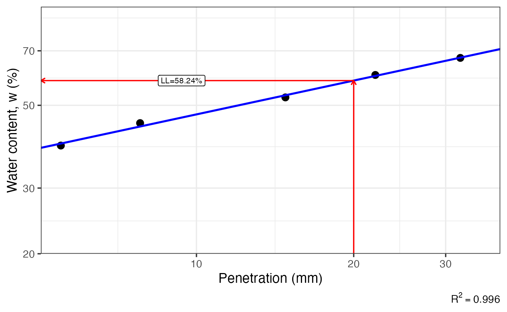
Both limits (LL and PL):
res_fc <- fallcone_limits(
P = c(5, 9, 15, 22),
W = c(20, 30, 43, 58),
limit = 'b'
)
res_fc$plot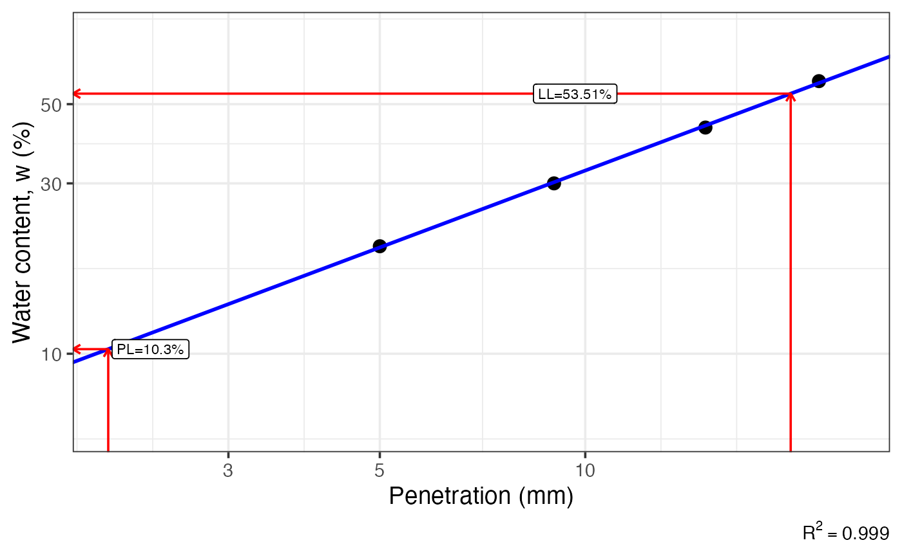
res_fc[c("ll", "pl", "pi")]## $ll
## [1] 53.51
##
## $pl
## [1] 10.3
##
## $pi
## [1] 43.21Casagrande plasticity chart
Casagrande_chart produces the standard LL–PI chart with
the A-line, U-line, and CL-ML zone. It returns a ggplot2 object that can
be further annotated.
Reference chart only:
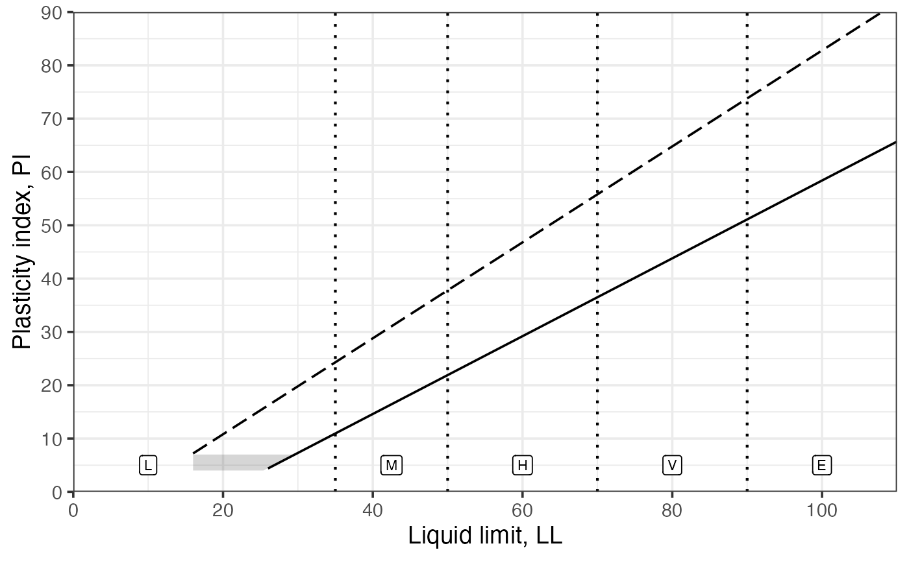
Overlaying sample data:
soil_df <- data.frame(
ll = c(67, 58, 77, 51),
pi = c(39, 19, 22, 20),
sample = paste0("M", 1:4)
)
Casagrande_chart() +
ggplot2::geom_point(
ggplot2::aes(ll, pi, shape = sample, colour = sample),
soil_df,
size = 3
) +
ggplot2::scale_shape_manual(values = 1:4)
USCS classification
Grain-size distribution graph
particle_size_graph returns an empty ggplot2 template
with a log-scale x-axis and the standard clay/silt/sand/gravel boundary
lines at 0.002, 0.075, and 4.75 mm, ready for gradation data to be
overlaid.
suelo <- dplyr::tribble(
~d , ~pp , ~sample ,
0.075 , 21.74 , "A" ,
0.150 , 25.91 , "A" ,
0.250 , 28.25 , "A" ,
0.425 , 30.92 , "A" ,
0.850 , 36.11 , "A" ,
2.000 , 41.69 , "A" ,
4.750 , 49.67 , "A" ,
9.500 , 56.75 , "A" ,
12.700 , 61.08 , "A" ,
25.400 , 66.95 , "A" ,
38.100 , 83.19 , "A" ,
50.800 , 100.00 , "A" ,
0.075 , 42.96 , "B" ,
0.150 , 47.79 , "B" ,
0.250 , 52.18 , "B" ,
0.425 , 55.82 , "B" ,
0.850 , 62.80 , "B" ,
2.000 , 75.11 , "B" ,
4.750 , 87.86 , "B" ,
9.500 , 96.25 , "B" ,
12.700 , 97.97 , "B" ,
19.000 , 100.00 , "B"
)
particle_size_graph() +
ggplot2::geom_point(
ggplot2::aes(d, pp, shape = sample, colour = sample),
suelo,
size = 3
) +
ggplot2::geom_line(
ggplot2::aes(d, pp, colour = sample),
suelo
) +
ggplot2::scale_shape_manual(values = 1:2)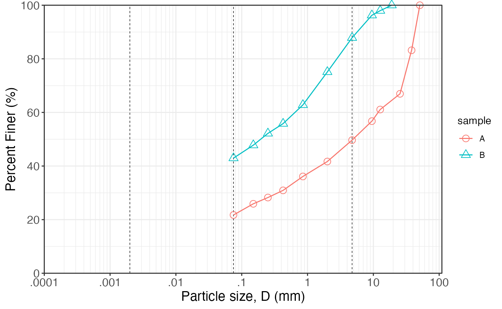
USCS symbol and name
USCS classifies a soil sample according to ASTM D2487.
Supply the grain fractions (pg, ps,
pf) and gradation coefficients (Cu,
Cc) for coarse-grained soils, plus Atterberg limits when
fines exceed 5 %. For fine-grained soils
(%),
only pf, LL, and PI (or
PL) are needed. Grain fractions and gradation coefficients
can also be derived automatically from size +
percent vectors.
Lean clay:
USCS(pg = 15, ps = 34, pf = 51, Cc = 1, Cu = 4, LL = 40, PL = 10)## $symbol
## [1] "CL"
##
## $name
## [1] "Sandy lean clay with gravel"
##
## $pg
## [1] 15
##
## $ps
## [1] 34
##
## $pf
## [1] 51Well-graded gravel:
USCS(pg = 68, ps = 27, pf = 5, Cc = 2.1, Cu = 6.5, LL = 0, PL = 0, PI = 0)## $symbol
## [1] "GW-GC"
##
## $name
## [1] "Well-graded gravel with clay & sand (or silty clay & sand)"
##
## $pg
## [1] 68
##
## $ps
## [1] 27
##
## $pf
## [1] 5
##
## $Cu
## [1] 6.5
##
## $Cc
## [1] 2.1Fat clay:
USCS(pg = 2, ps = 8, pf = 90, LL = 65, PI = 35)## $symbol
## [1] "CH"
##
## $name
## [1] "Fat clay"
##
## $pg
## [1] 2
##
## $ps
## [1] 8
##
## $pf
## [1] 90Classification from grain-size distribution data:
USCS(
percent = c(0, 10, 30, 60, 90, 100),
size = c(0.075, 0.15, 0.3, 0.6, 1.18, 2.36),
LL = 20,
PL = 10
)## $symbol
## [1] "SP"
##
## $name
## [1] "Poorly-graded sand"
##
## $pg
## [1] 0
##
## $ps
## [1] 100
##
## $pf
## [1] 0
##
## $Cu
## [1] 4
##
## $Cc
## [1] 1Direct shear
The functions for direct shear are more for visualizing the results
rather than to process them. The user should analyze the raw data and
provide the normal stress (sig.n,
)
- shear stress (tau,
)
pairs.
The first function plots the resulting pairs and adds a line of best fit for the Mohr-Coulomb criterion (). If the line of best fit estimates an intercept of less than 0 (), the function automatically assigns , as this is not a possible solution. Also, the estimated parameters () are added to the plot.

The second function adds on top of the first one by drawing the Mohr circles for each of the pairs.
DS_Mohr_plot(sig.n = c(80, 237, 395), tau = c(127, 345, 475))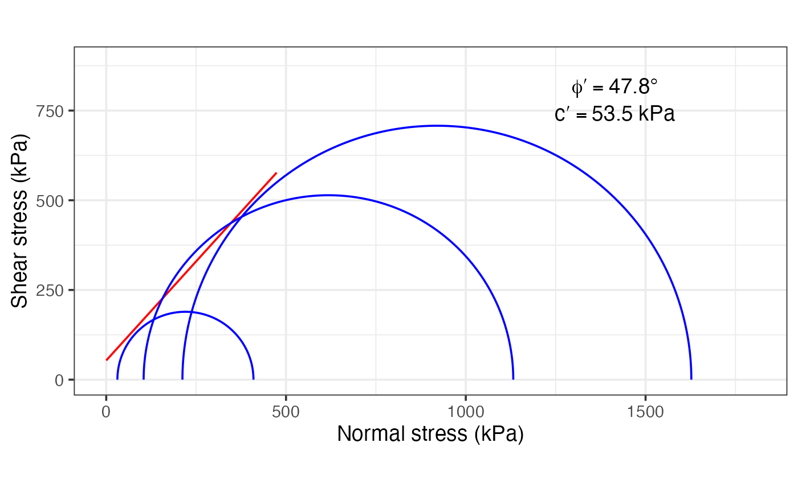
Mohr circle
The idea here is to provide a way to solve simple Mohr circle’s problems for the given normal stresses, shear stress, and rotation angle. The function returns a plot and the results for the given problem and parameters.
We can define some values to use:
sigx = 143.6
sigy = 100.5
tauxy = -14.4
theta = -35where sigx corresponds to the mayor normal stress,
sigy corresponds to the minor normal stress,
tauxy corresponds to the shear stress, and
theta is the rotation angle for which to find the
stresses.
In the first example the rotation is not applied:
Mohr_Circle(sigx, sigy, tauxy)## $results
## sig1 sig2 sig_theta tau_theta tau_max
## 1 147.97 96.132 143.6 -14.4 25.918
##
## $figure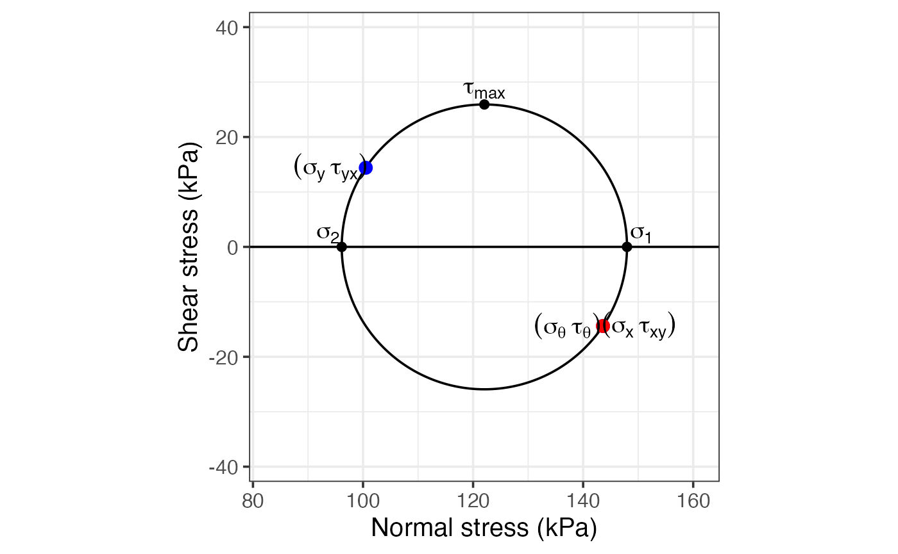
In the second example the rotation is applied:
Mohr_Circle(sigx, sigy, tauxy, theta)## $results
## sig1 sig2 sig_theta tau_theta tau_max
## 1 147.97 96.132 115.89 -25.175 25.918
##
## $figure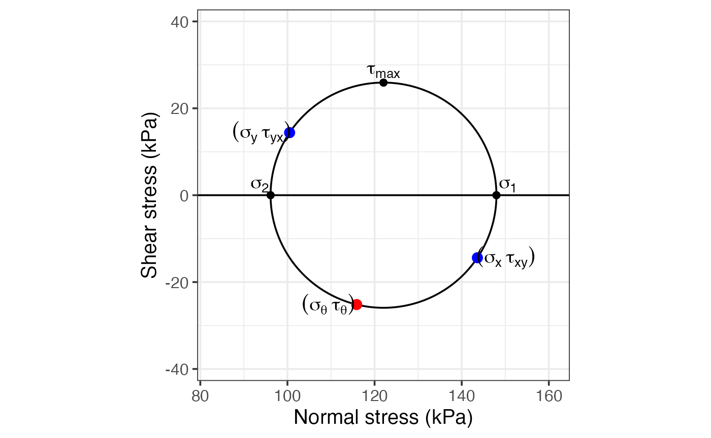
Clay activity, expansion, and collapse
Three chart functions help classify the swelling and collapse
potential of fine-grained soils. All return ggplot2 objects that can be
extended with + to overlay sample data.
Clay activity chart
clay_activity draws PI vs clay percentage with eight
reference activity lines (fitted by regression on built-in data).
Activity
reflects the mineralogy of the clay fraction.

Overlay sample points:
act_dat <- data.frame(
clay = c(30, 45, 60),
pi = c(55, 130, 210)
)
clay_activity() +
ggplot2::geom_point(
ggplot2::aes(clay, pi),
act_dat,
size = 3,
inherit.aes = FALSE
)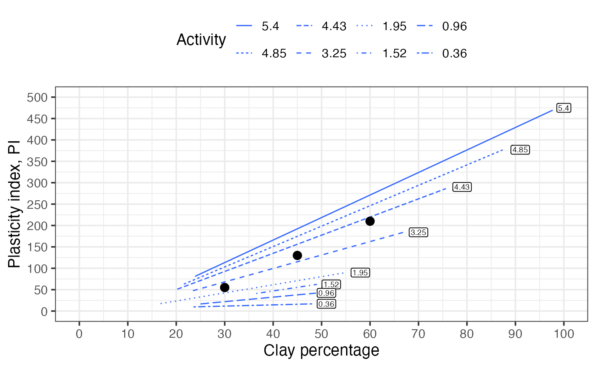
Soil swelling potential chart
soil_swelling draws clay activity vs clay percentage
with three boundary curves separating the Low, Medium, High, and Very
High swelling potential zones.

Overlay sample points:
swell_dat <- data.frame(
clay = c(20, 40, 60),
activity = c(0.5, 1.0, 2.0)
)
soil_swelling() +
ggplot2::geom_point(
ggplot2::aes(clay, activity),
swell_dat,
size = 3,
inherit.aes = FALSE
)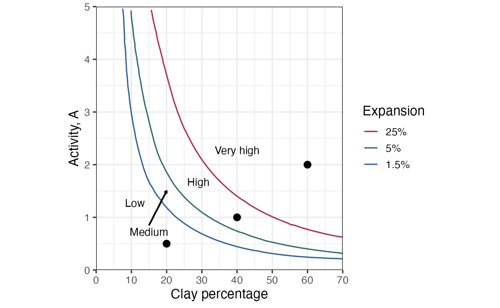
Soil expansion potential chart
soil_expansion draws PI vs clay percentage with four
boundary curves for Low, Medium, High, and Very High expansion potential
zones.
Overlay sample points:
exp_dat <- data.frame(
clay = c(20, 40, 60),
pi = c(10, 23, 40)
)
soil_expansion() +
ggplot2::geom_point(
ggplot2::aes(clay, pi),
exp_dat,
size = 3,
inherit.aes = FALSE
)
Soil collapse potential chart
soil_collapse draws dry density vs liquid limit with two
boundary curves
(
and
)
and dashed reference lines at LL = 40, 50, and 63, separating zones of
Low, Medium, High, and Very High collapse and expansion potential.
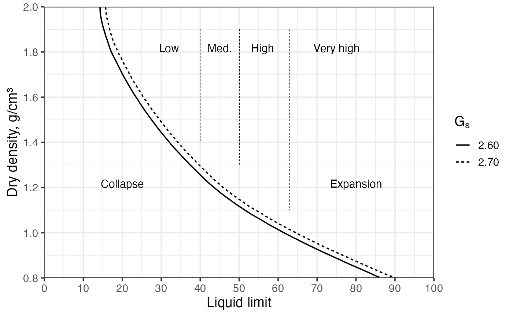
Overlay sample points:
coll_dat <- data.frame(
ll = c(20, 40, 60, 80),
dry = c(1.50, 1.15, 1.20, 1.00)
)
soil_collapse() +
ggplot2::geom_point(
ggplot2::aes(ll, dry),
coll_dat,
size = 3,
inherit.aes = FALSE
)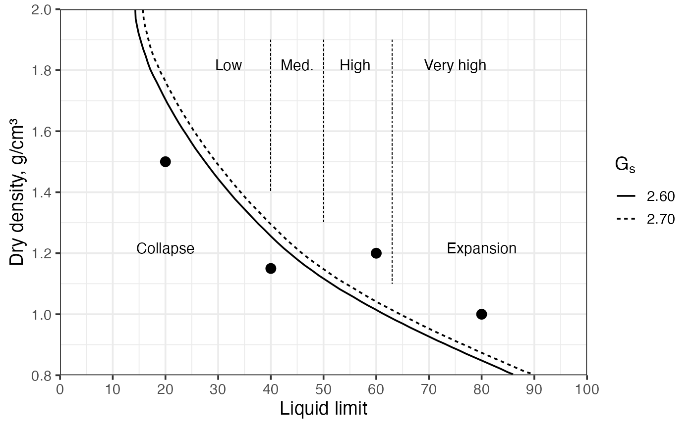
Shinyapp
A shinyapp using these functions can be accessed at https://maximiliano-01.shinyapps.io/soil_mechanics/.